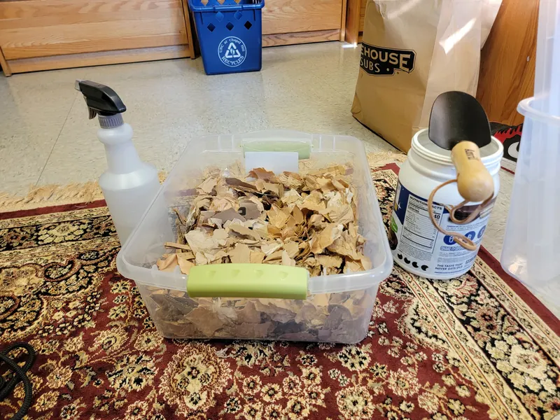
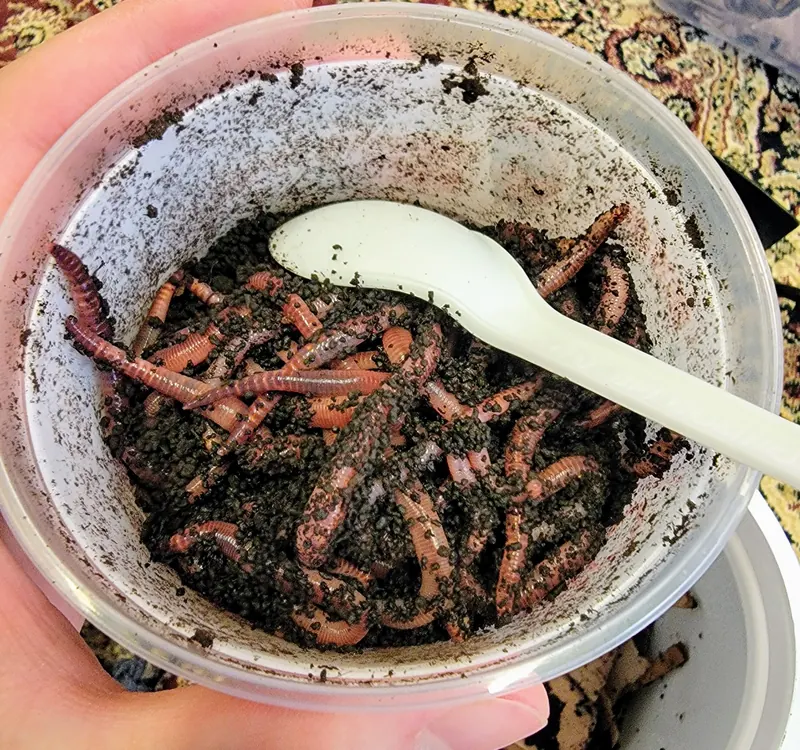
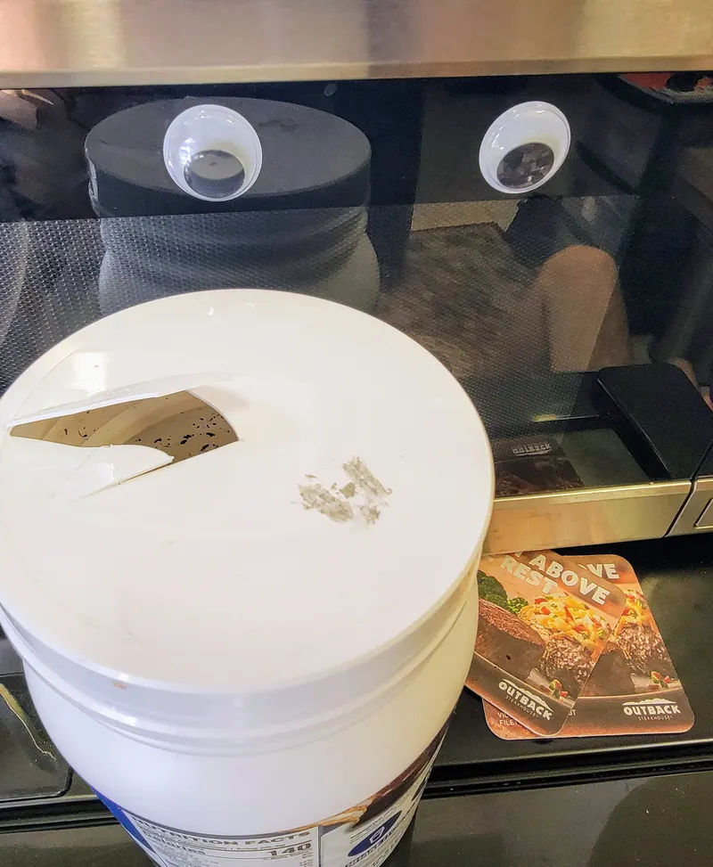
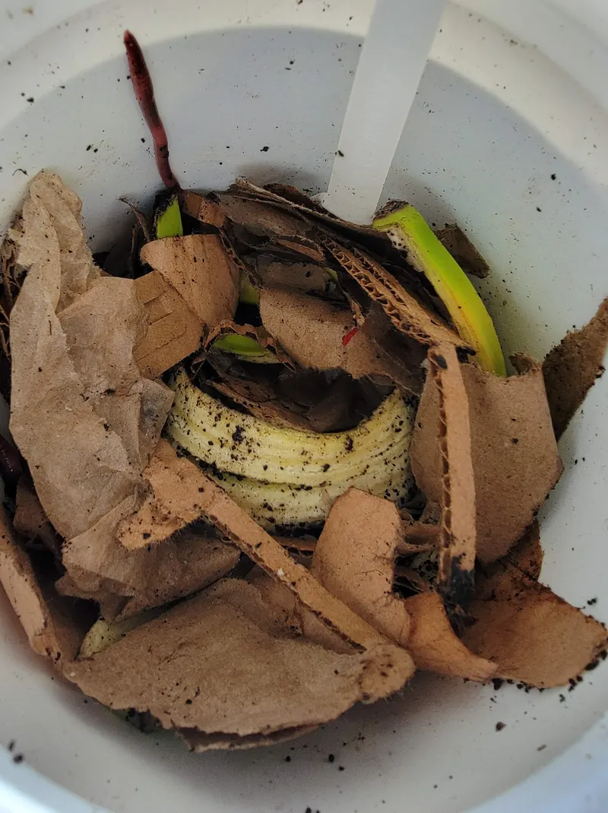
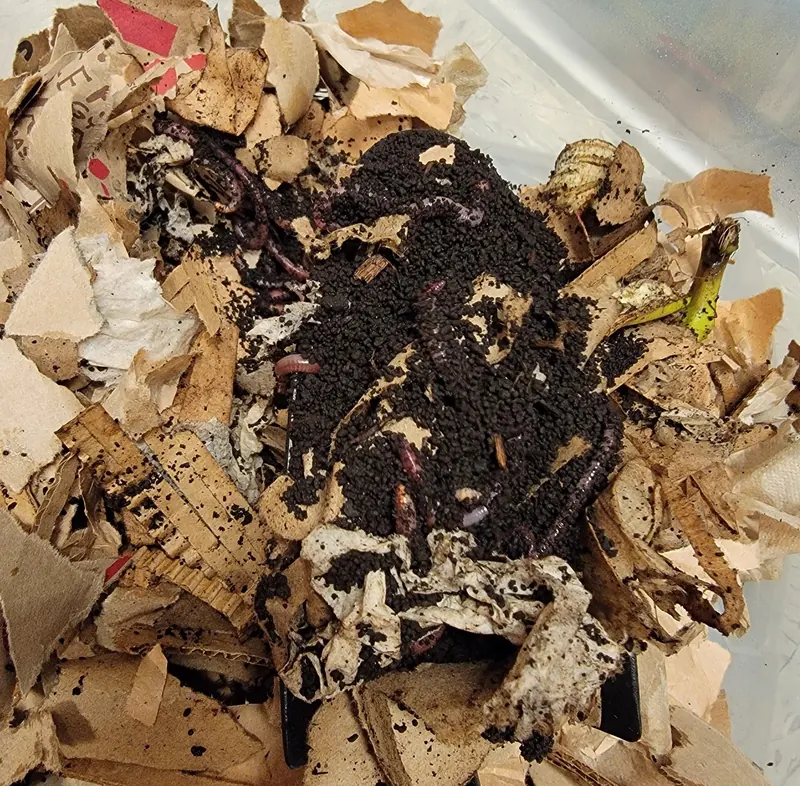
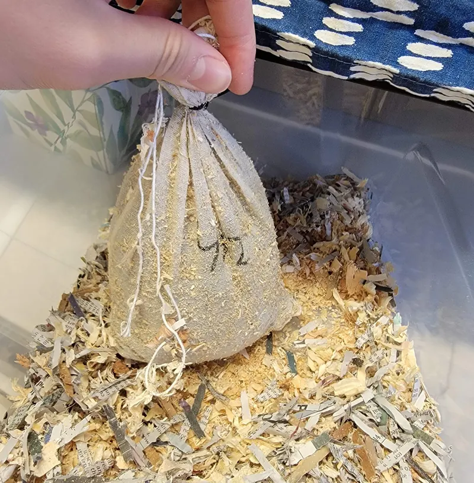
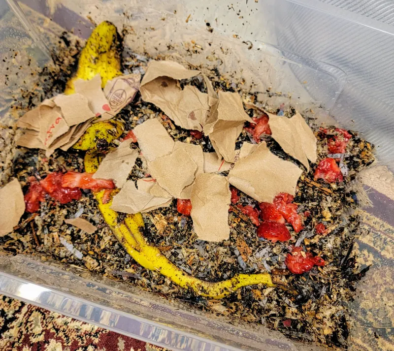
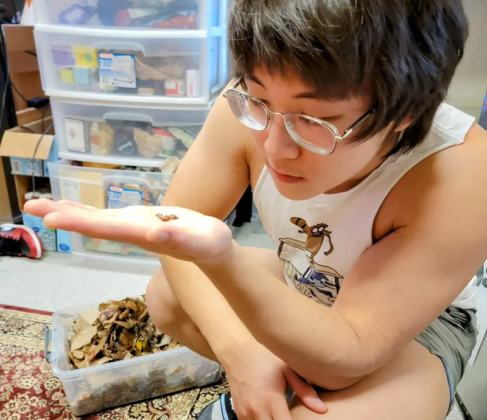

On this page
TL;DR
On a rainy day, I felt guilty for leaving an earthworm stranded, which led me to research and create a worm bin in my dorm. A worm bin is a simple, closed-loop system where worms (ideally red wigglers) break down compostable materials like kitchen scraps and paper into nutrient-rich castings. I initially bought European nightcrawlers by mistake, but eventually got red wigglers, which proved more efficient in processing food. Setting up a basic worm bin involves a plastic container, bedding of shredded paper or cardboard, food scraps, and moisture, with optional drainage holes for excess liquid. The goal is to maintain a balanced environment by controlling moisture, temperature, and the carbon-to-nitrogen ratio, eventually harvesting the nutrient-dense castings after a few months. In the end, I not only optimized a small indoor composting setup but also saved 60 worms from becoming pet food.
Intro
One rainy day, as I walked to class, I noticed an earthworm stranded on the sidewalk. It took me about ten yards before it occurred to me that I should've put it back in the dirt; but by then, I was too lazy to turn around, so I kept going. The guilt of leaving the poor worm to dry out or get stepped on weighed on me throughout my Systems Fundamentals class. Naturally, I found myself researching how to keep worms in my dorm.
A worm bin is essentially a closed-loop system that mimics nature's decomposition process. Worms consume compostable materials like brown paper and food scraps, turning them into nutrient-rich worm castings (worm poop) and worm tea (worm casting juice). This process, called vermicomposting, comes from the Latin word vermis (meaning worm) combined with composting.
Process
You barely need a guide to get started—it's exactly how you think it works. Get a bin, put the worms in it, add food, and place it somewhere cool and dark. But there are a few things you can do to optimize the process.
First of all, I didn't know this before, but different species of worms are better suited for breaking down compost. Red wigglers (Eisenia fetida) and European nightcrawlers (Dendrobaena hortensis) are the two most common species. Red wigglers reproduce faster and process food more efficiently, while nightcrawlers are a bit better at handling colder temperatures. For my small, indoor setup, red wigglers are the best choice due to their quicker reproduction and ability to break down food faster.
So, I began my preparations: first, I needed a bin for the worms and then some food. Worms thrive on a mix of nitrogen and carbon at about a 1:3-4 ratio—nitrogen coming from kitchen scraps, and carbon from things like paper or cardboard. I went dumpster diving around my dorm, hoping to find a discarded bin, but only managed to find some suitable paper scraps and a small protein powder tin. I ripped those up and stored them as bedding for the worms.

Next, I headed to Home Depot, hoping to find red wigglers in the gardening section, but they didn't carry them in-store. So, I made my way to PetSmart, thinking they might sell worms as food for reptilian and amphibian pets. I got lucky and grabbed two packages of 30 red worms. Even though I said earlier that red wigglers were the best choice for my setup, I realized when I got back to my dorm that I had mistakenly purchased nightcrawlers. Oops. The packaging had the word "red" on the side. I'd call that false advertising, but I'm sure I can still make do with nightcrawlers, even if they aren't the ideal fit for an indoor bin.

I realized that the bin I had wasn't ready: usually you're supposed to drill holes at the bottom to allow for drainage of any excess moisture. I needed a temporary home for the worms until I could get my hands on an electric drill at the university's makerspace, so I settled on the protein powder container I had from dumpster diving. I put some of the shredded paper at the bottom, then dumped the worms in. They kind of just arrive in... a ball. It's cool, weird, and gross at the same time.

After that, I gently mixed them into the bedding and covered them with a bit more paper. I used a pocket knife to poke a hole in the lid for ventilation. It wasn't perfect, but it would do for now.

Upgrades
After a few days I moved the worms to a larger bin. I had an urge to optimize when I realized that I had European Nightcrawlers, an urge that could only be satiated by buying Red Wigglers from a local worm farm.

These also arrived in a big ball, which I held this time.


I prepared a separate bin with a banana peel and some strawberries which had fermented. I decided not to drill any holes because I realized that drilling holes meant that smelly worm juice would be curdling somewhere in my dorm, so I'd rather have a more active hand in managing the moisture levels.

Now, I just have to wait a few months for my first harvest of those fertilizing nutrient-dense worm castings!
Guide
I've compiled my findings into a simple guide you can follow to create a bare-bones worm bin at home. If you're looking to invest more time and effort, you can definitely do much better—this is just the basics to get you started. For more advanced setups, I recommend checking out a YouTube video for additional details.
Materials:
- Worm Bin: Any container that can serve as a bin—plastic bins work best. You can find these at a local hardware store or even upcycle something you already have (an old storage container, etc.).
- Worms: Red wigglers (Eisenia fetida) are the preferred choice for composting. You can find them at gardening stores, online, or pet shops (though be careful to check the species).
- Bedding Material: Shredded paper, cardboard, dry leaves, or coconut coir. These provide carbon for the worms and help balance moisture.
- Kitchen Scraps: Vegetable peels, fruit scraps (like banana peels and apple cores), and coffee grounds for nitrogen.
- Moisture Source: Water to keep the bedding moist. Use a spray bottle on the mist setting.
Steps:
1. Prepare the Bin:
- Select a bin that is appropriate for the number of worms you have. For a small indoor setup, a bin with a capacity of around 5-10 gallons will do.
- If using a plastic bin, drill a few small holes in the sides and lid to allow for ventilation. For drainage, you can drill holes in the bottom and place a tray beneath the bin to catch any excess liquid (optional, depending on your comfort with worm tea). Or not, if you don't want that excess liquid stinking up the place.
2. Add Bedding:
- Place shredded paper, cardboard, or any other carbon source in the bin. The bedding should be about 3-4 inches deep, enough for the worms to burrow in and feel comfortable.
- Moisten the bedding. It should feel like a wrung-out sponge.
3. Introduce the Worms:
- Gently place the worms on top of the bedding. They will naturally burrow down into the material away from the light.
4. Feed the Worms:
- Start small: add a handful of kitchen scraps like banana peels, apple cores, or coffee grounds. Make sure to bury the scraps under the bedding to prevent fruit flies and odors.
- Avoid feeding the worms any dairy, meat, citrus, or overly spicy foods as these can create unsuitable conditions.
5. Maintain the Environment:
- Moisture: Keep the bedding damp, but not soaking wet. If it's too dry, spray a bit of water. If too wet, add some dry bedding like shredded paper or cardboard.
- Temperature: Worms do best at room temperature (around 55-77°F or 13-25°C). Avoid extreme cold or heat.
- Food Balance: Aim for a ratio of 1 part nitrogen-rich food scraps to 3-4 parts carbon-rich bedding.
6. Harvesting Worm Castings:
- After about 2-3 months, you will start to see dark, crumbly worm castings forming. This is a sign that the worms have broken down the food and bedding.
- To harvest, push the contents of the bin to one side and add fresh bedding and food to the empty side. The worms will migrate over in a week or two, allowing you to scoop out the castings from the old side.
7. Managing Moisture Without Drainage Holes (Optional):
- Instead of drilling holes for drainage, you can control moisture manually by adjusting how much bedding you add. If the bin becomes too wet, add more dry bedding. Keep an eye on the bin and be proactive in maintaining a balance.
In any case, I saved 60 worms from a certain fate of being food for some lizard or bird.
